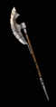

| Polearm |
Two Hand Damage
| Min Strength |
Min Dexterity |
Rangeadder
| Durability
| Sockets
| Speed by Class
| Quality Level |

Bardiche
|
1 to 27 (14 Avg) |
40 |
- |
2 |
50 |
3 |
[10]
D - Fast
N, S - Normal
Ama, Asn, B, P - Slow |
5 |
Voulge
|
6 to 21 (13.5 Avg) |
50 |
- |
2 |
50 |
4 |
[0]
D, S - Fast
Asn, B, N, P - Normal
Ama - Slow |
11 |

Scythe
|
8 to 20 (14 Avg) |
41 |
41 |
1 |
65 |
5 |
[-10]
D - Very Fast
N, P, S - Fast
Ama, Asn, B - Normal |
15 |

Poleaxe
|
18 to 39 (28.5 Avg) |
62 |
- |
3 |
65 |
5 |
[10]
D - Fast
N, S - Normal
Ama, Asn, B, P - Slow |
21 |

Halberd
|
12 to 45 (28.5 Avg) |
75 |
47 |
4 |
55 |
6 |
[0]
D, S - Fast
Asn, B, N, P - Normal
Ama - Slow |
29 |
War Scythe
|
15 to 36 (25.5 Avg) |
80 |
80 |
4 |
55 |
6 |
[-10]
D - Very Fast
N, P, S - Fast
Ama, Asn, B - Normal |
34 |